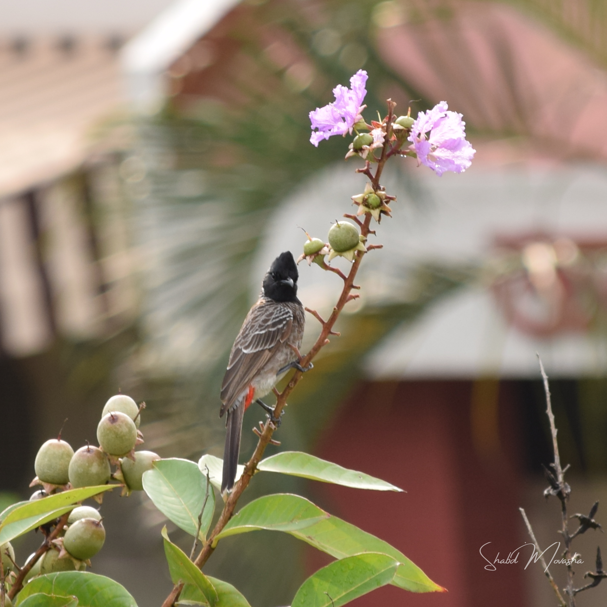
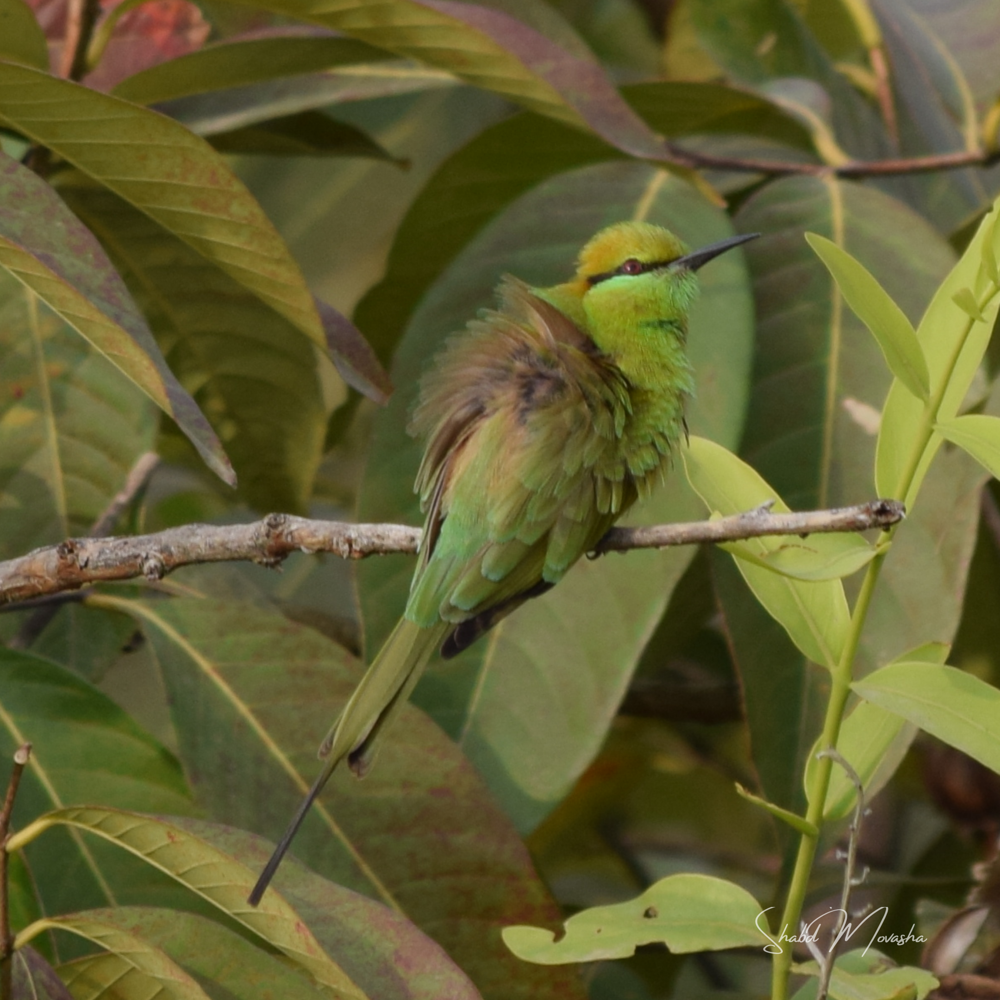
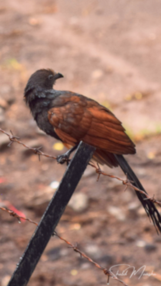
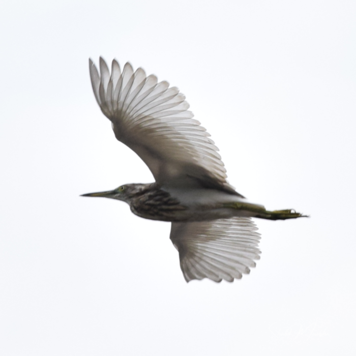
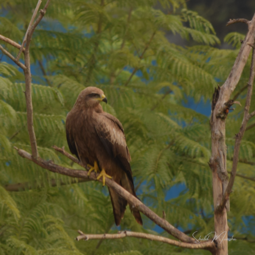
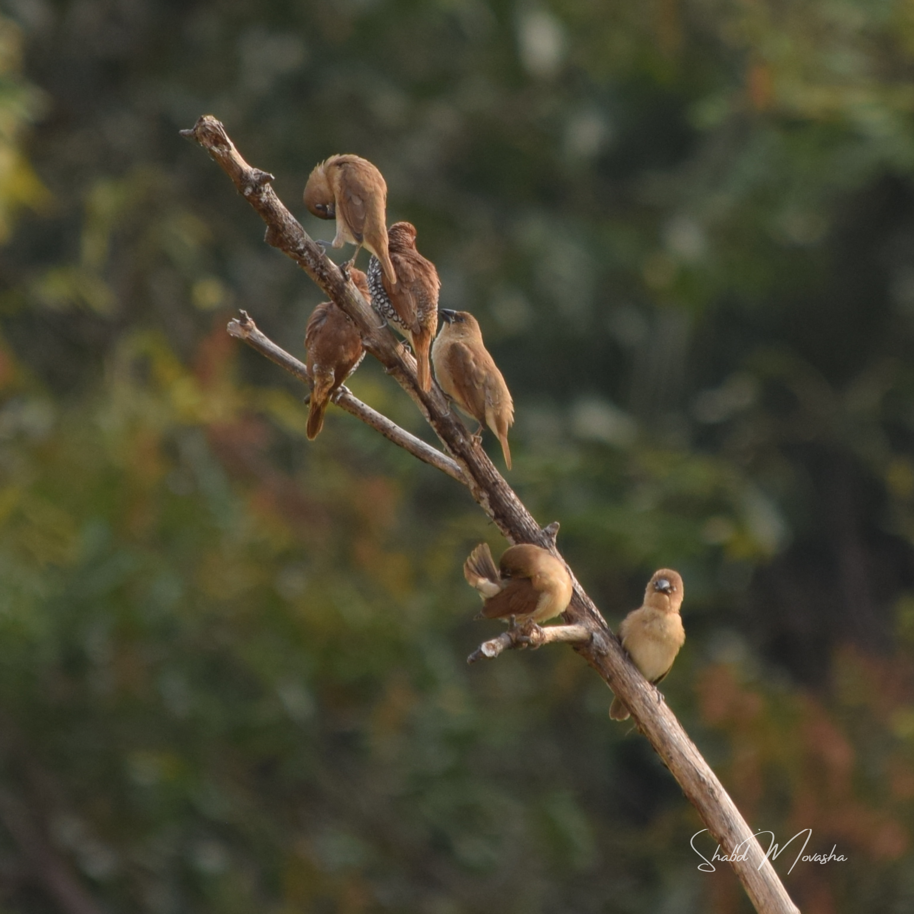
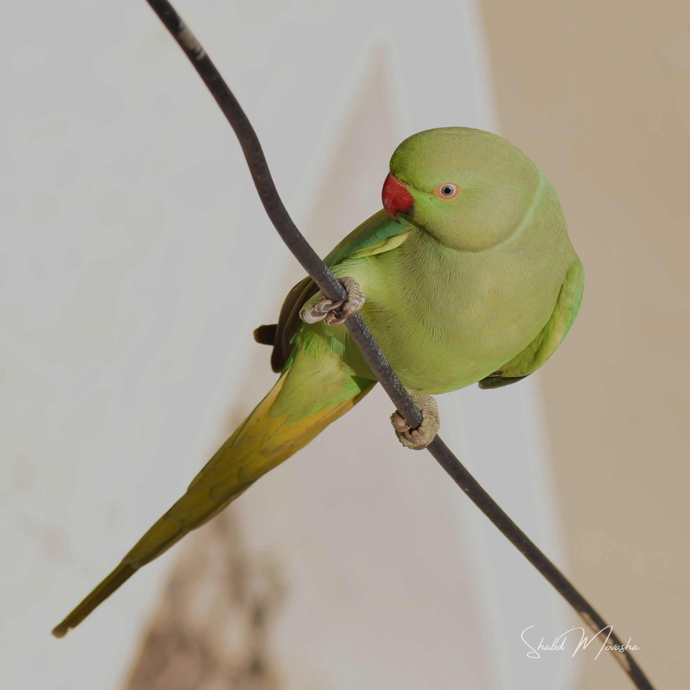
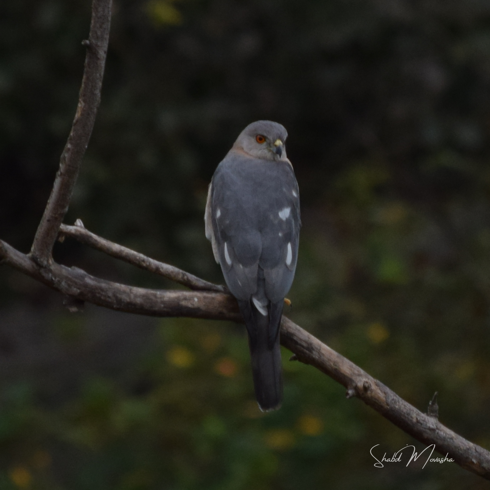

The Oriental magpie-robin is a small passerine bird that was formerly classed as a member
of the thrush family Turdidae.
ASIAN KOEL
The Asian koel is a member of the cuckoo order of birds, the Cuculiformes.
It is found in the Indian Subcontinent, China, and Southeast Asia.
It forms a superspecies with the closely related black-billed koels, and Pacific koels which
are sometimes treated as subspecies.
BLACK CROWNED NIGHT HERON
The black-crowned night heron, or black-capped night heron,
commonly shortened to just night heron in Eurasia,
is a medium-sized heron found throughout a large part of the world,
except in the coldest regions and Australasia.
BLACK DRONGO
The black drongo is a small Asian passerine bird of the drongo family Dicruridae.
It is a common resident breeder in much of tropical southern Asia from southwest Iran
through India,
Bangladesh and Sri Lanka east to southern China and Indonesia and accidental visitor of
Japan.

BULBUL
Water is an inorganic, transparent, tasteless, odorless, and nearly colorless
chemical substance, which is the main constituent of Earth's
hydrosphere and the fluids of all known living organisms.
GREEN BEE-EATER
The green bee-eater, also known as little green bee-eater,
is a near passerine bird in the bee-eater family.

GREEN BEE-EATER
The green bee-eater, also known as little green bee-eater,
is a near passerine bird in the bee-eater family.

GREATER COUCAL
The greater coucal or crow pheasant, is a large non-parasitic member of the cuckoo order of
birds, the Cuculiformes.
A widespread resident in the Indian Subcontinent and Southeast Asia,
it is divided into several subspecies, some being treated as full species.

BLACK CROWNED NIGHT HERON
The black-crowned night heron, or black-capped night heron,
commonly shortened to just night heron in Eurasia,
is a medium-sized heron found throughout a large part of the world,
except in the coldest regions and Australasia.
KITE
Kite is the common name for certain birds of prey in the family Accipitridae,
particularly in subfamilies Milvinae, Elaninae,and Perninae.
Some authors use the terms "hovering kite" and "soaring kite" to distinguish between Elanus
and the milvine kites,
respectively.

KITE
Kite is the common name for certain birds of prey in the family Accipitridae,
particularly in subfamilies Milvinae, Elaninae,and Perninae.
Some authors use the terms "hovering kite" and "soaring kite" to distinguish between Elanus
and the milvine kites,
respectively.
INDIAN GREY HORNBILL
The Indian grey hornbill is a common hornbill found on the Indian subcontinent.
It is mostly arboreal and is commonly sighted in pairs.
It has grey feathers all over the body with a light grey or dull white belly.
LAUGHING DOVE
Water is an inorganic, transparent, tasteless, odorless, and nearly colorless
chemical substance, which is the main constituent of Earth's
hydrosphere and the fluids of all known living organisms.
LITTLE EGRET
The little egret (Egretta garzetta) is a small white heron belonging to the family Ardeidae.
The little egret is distributed in Asia, Indian Subcontinent, Europe, Africa and Australia.
MYNA
The common myna or Indian myna, sometimes spelled mynah,
is a member of the family Sturnidae native to Asia.

JUNGLE BABBLER
The jungle babbler is a member of the family Leiothrichidae found in the Indian
subcontinent.

PARAKEET
A parakeet is any one of many small to medium-sized species of parrot, in multiple
genera,
that generally have long tail feathers. Older spellings still sometimes encountered are
paroquet or paraquet.

SHIKRA
The shikra (Accipiter badius) is a small bird of prey in the family Accipitridae found widely
distributed
in Asia and Africa where it is also called the little banded goshawk.
PURPLE SUNBIRD
he purple sunbird (Cinnyris asiaticus) is a small bird in the sunbird family found
mainly in South and Southeast Asia but
extending west into parts of the Arabian peninsula.
Like other sunbirds they feed mainly on nectar, although they will also take insects,
especially when feeding young.
SUNBIRD
Sunbirds and spiderhunters make up the family Nectariniidae of passerine birds.
They are small, slender passerines from the Old World